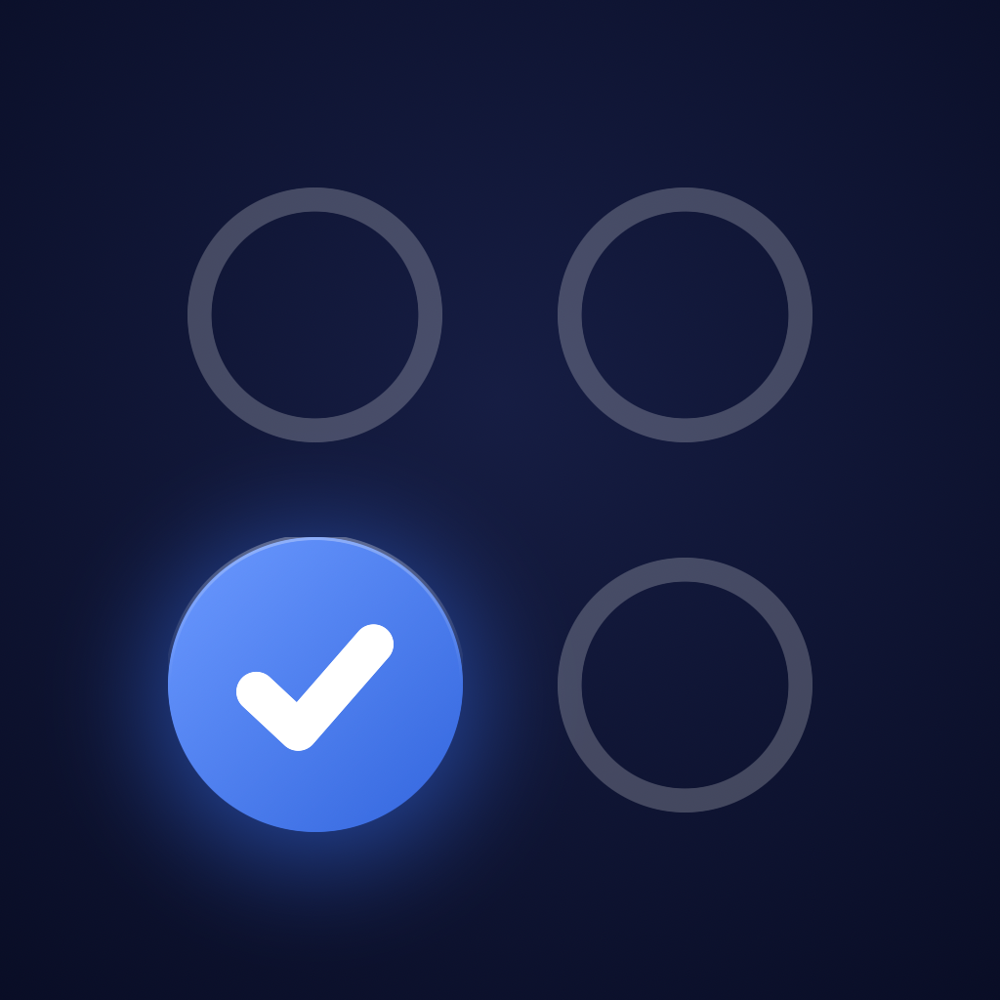

7. sınıf · kazanım bazlı çalışma
Yedi dersin kazanımlarına bağlı bir soru bankası ve bu bankayı oyun hâline getiren bir çalışma düzeni. İnternet bağlantısı kullanmaz, hiçbir veri toplamaz, reklam göstermez.
Türkçe, Matematik, Fen Bilimleri, Sosyal Bilgiler, Din Kültürü, İngilizce ve Almanca. Her soru Türkiye Yüzyılı Maarif Modeli'ndeki bir öğrenme çıktısına bağlı ve ekranda o kazanımın kodu yazıyor.
Çözüm tek blok hâlinde değil, adım adım açılıyor. Matematikte işlem satırları deftere yazılır gibi alt alta diziliyor. İstenirse cihazın Türkçe sesiyle okunuyor.
Her tema bir bölüm, her kazanım bir durak. Geçilen duraklar yeşile döner, bölümün sonunda tema sınavı çıkar. Hiçbir konu kilitli değildir.
Yanlış yapılan soru bir kuyruğa girer ve unutulmadan önce yeniden karşına çıkar. Doğru bilindikçe aralık uzar.
Süreli deneme sınavında net hesaplanır (3 yanlış 1 doğruyu götürür). Hız yarışında kendi rekorunla yarışırsın; her yanlış süreye 10 saniye ekler.
Telefonu sırayla uzatarak arkadaş, anne, baba ya da kardeşle karşılıklı oynanır. Sunucu ya da hesap gerekmez.
Sorular bu uygulama için yazıldı; bir yayınevi kitabından ya da MEB kitapçığından alınmadı. Her soru, yazıldıktan sonra bağımsız bir değerlendirmeden geçirildi: soru metni gizlenip yalnız şıklar gösterildiğinde cevabın bulunup bulunamadığı sınandı, metin okunmadan çözülebilen sorular bankaya alınmadı.
Uygulama bir öğretim kurumuna, yayınevine ya da Millî Eğitim Bakanlığı'na ait değildir ve onlarla bir bağı yoktur.
Uygulama hiçbir veri toplamaz. İnternet bağlantısı kullanmaz; içinde analiz aracı, reklam ağı ya da üçüncü taraf yazılım geliştirme kiti yoktur. Girilen ad ve bütün çalışma kayıtları yalnız cihazda saklanır. Ayrıntı için gizlilik politikası.